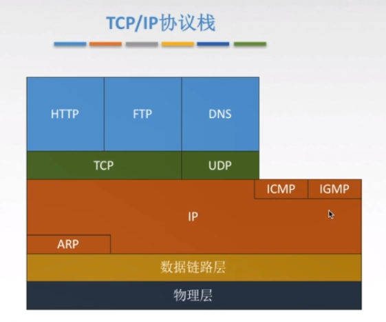
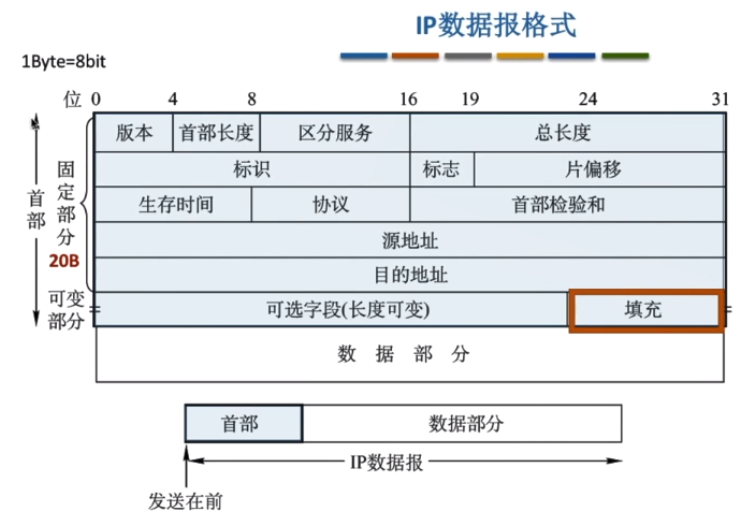
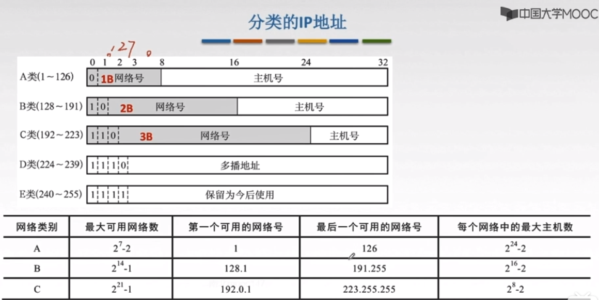
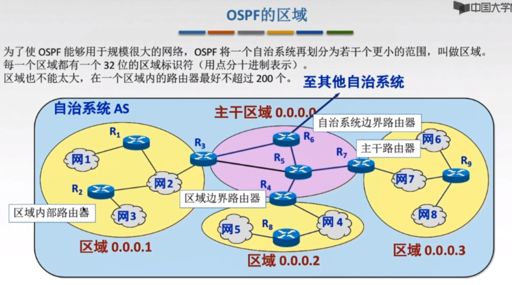
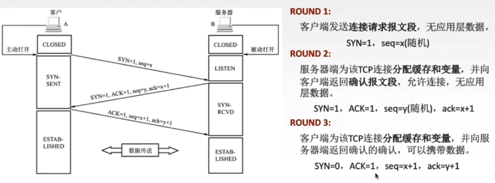

基础概念
- 速率（比特率）：在数字信道传送数据位数的速率,b/s,kb/s,Mb/s(mbps:Mb per second)（运营商常用，进制10进制），也可以理解为带宽的概念
- 存储容量，1Byte=8bit（进制1024）
- 时延：发送时延+传播时延+排队时延+处理时延
- RTT：往返时延，发送开始到发送方收到接收方的ack，即2*传输时延，不含发送时延，处理时延等
- 信源：产生和发送数据的源头
- 信宿：接收数据的终点
- 信道：信号的传输媒介
- 单工同行：电报，一方只能发送，一方只能接受
- 半双工通信：对讲机，双方错开说话
- 全双工通信：视频电话，双方同时说
OSI 七层模型，TCPIP四层
why
解决互联网异构问题
what
| 序号 | 名称 | TCP/IP | 常见协议 | 作用 |
|---|---|---|---|---|
| 7 | 应用层 | |||
| 6 | 表示层 | |||
| 5 | 会话层 | 应用层 | ||
| 4 | 传输层 | 传输层 | ||
| 3 | 网络层 | 网际层 | ||
| 2 | 数据链路层 | 网络接口层 | ||
| 1 | 物理层 |

difference
| index | OSI | TCPIP |
|---|---|---|
| 1 | 理论模型 | 实际应用 |
| 2-网络层区别 | 无连接+面向连接 | 无连接 |
| 3- 传输层区别 | 面向连接 | 无连接+面向连接 |
- 面向连接：TCP的建立连接，然后收发数据，断开连接
- 无连接：无需建立连接，直接发数据
- 五层参考模型就是将TCP/IP的网络接口层分成了：数据链路层和物理层，从底向上依次是：物理层，数据链路层，网络层，传输层，应用层
传输介质
what
传输介质是第0层，是物理层下面的载体
分类
导向性传输介质：固体，如光纤，双绞线，同轴电缆（电视线）
非导向类传输介质：空气，真空，海水，等
物理层
why
解决计算机的传输媒体多样性的问题
what
主机发送数据无需关心底层的介质是双绞线还是光纤，或者是华为家生产的，还是中兴家生产的。
类比就是你要发一个包裹，你可以选择四通一达以及顺丰，也不用管包裹走水陆空那一路，你只要负责发包裹，剩下的事情，物理层解决
概念
- 码元：固定时长的信号波形（数字脉冲），举个例子：二进制码元，0和1，四进制码元，00,01,10,11，八进制码元000,001,010,100,011,110,101,111，即，一个码元可以携带多个比特信息
- 码元传输速率：1s传输多少个码元，单位：波特（Baud）
- 信息传输速率：码元传输速率*n（1个码元有n个比特表示，如101，n=3）,值就是带宽b/s
- 编码
- 解码
编码

| 名称 | 特点 |
|---|---|
| 二进制数据 | |
| 非归零编码（NRZ） | 简单，但无法检错，无法保持同步 |
| 归零编码（RZ） | 一个码元内要恢复到零 |
| 曼彻斯特编码 | 下跳是1，上跳是0 |
| 差分曼彻斯特编码 | 同1异0 |
 其他了解：反向不归零编码（NRZI），4B/5B编码
其他了解：反向不归零编码（NRZI），4B/5B编码
奈氏准则（奈奎斯特定理，传输极限，避免码间串扰）
definition
在理想环境下，为了避免码间串扰，极限码元传输速率为2W Baud，W为信道带宽，单位Hz
极限数据传输率
$$
v=2W\log_2 V(b.s)
$$
- W:带宽（Hz）
- V:几种码元/码元的离散电平数目
意义
- 码元传输速率有上限
- 带宽越宽，极限传输率越高
- 使用多元制的调制方法，提高码元携带的比特数
香农定理（信噪比）
definition
$$
信噪比= \frac{信号的平均功率}{噪声的平均功率}
$$记作：S/N
$$
信噪比（dB）=10\ln (S/N)
$$
单位：dB，分贝
以上是信噪比的两种表现形式
香农定理：解决了带宽受限有噪音的信道中，不产生误差，信息的数据传输率的上限（奈斯是理想环境）
传输速率
$$
v=W\log_2 (1+S/N)
$$单位：b/s
W：带宽Hz
题目如果说信噪比是1000，即S/N=1000带入，如果题目说信噪比30dB则带入公式求出S/N的值，再代入公式
意义
- 信噪比越大，极限传输速率越高
考题注意：题目可能让你求奈氏准则和香农定理的速率，取其最小值为极限速率
设备（处理信号）
- 中继器：再生和还原数字信号
- 集线器：多口的中继器，放大转发，不能分割冲突域，平分带宽
数据链路层
definition
数据链路层将网络层的数据可靠的传输到相邻接点的目标及网络层
作用：加强物理层传输原始比特流的功能，将物理层提供的可能出错的连接改为在逻辑上无差错的数据链路
简单来说：数据链路层给报文编号，可以进行流量控制，丢失重发等
作用
- 提供：无确认无连接，有确认无连接，有确认面向连接服务
- 链路管理，连接的建立、维持、释放
- 组帧
- 流量控制
- 差错控制
组帧
在网络层的数据头尾添加：帧首部，帧尾部，让对方说识别帧的开始和结束

组帧的四种方法：（Transmission）
- 字符计数法：帧首部第一字节记录帧的长度（传输过程中，这个字符可能被修改，或者丢失，后续帧全部错误）
- 字符填充法：帧首部填充SOH（00000001）,尾部填充EOT（00000100）（数据部分有可能有SOH,EOT—>解决方式，转义字符）
- 零比特填充法：比如首部01111110，则数据部分遇到五个1填充一个0，来避免假SOH
- 违规编码法：如曼彻斯特会有，高-低–>1，低-高–>0,然后用低低和高高来做SOH,EOT
最大传输单元MTU
why
因为一个帧中IP数据包的内容不可能无限大
what
MTU最大传送单元
差错控制
差错分为两种：
位错：比特位数字出错
修正位错：
- 检错编码：奇偶校验，CRC循环冗余码（只知道错了）
- 纠错编码：海明码（知道错了，还知道错哪儿了）
帧错：丢失，重复，失序
修复帧错：
- 重传
冗余编码：数据放松之前，附加冗余位，使之符合某种规则，接收端检查不符合规则就判断为出错（即，奇偶校验，CRC，海明码）
奇偶校验码（n-1位信息元，1位校验元）
- 奇校验码：1的个数为奇数
- 偶校验码：1的个数为偶数
例：1100101奇校验–>11100101
“1”可以填到任意位置，只要有奇数个“1”，接收方就认为这一段没有出错，但如果丢了两个“1”就检查不错来了，所以出现了CRC
CRC循环冗余
要传的数据/多项式=商……余数
发送的数据=要传的数据+余数（FCS帧检验序列，又称冗余码）
例题：1101011011 生成多项式10011
要传的数据末尾加上4个0，除以10011余数1110，则发送的数据为：1101011011 1110
检查：11010110111110%10011==0则帧没有出错，否则丢弃
FCS的生成及校验是硬件实现，处理迅速，不会延迟
海明码
1.发现双比特错，纠正但比特错
2.工作原理：牵一发而动全身
3.确定校验码位数r–>确定校验码和数据的位置–>求出校验码的值–>检错并纠错
1.去顶校验码位数r
海明不等式：2^r≥k+r+1(r为冗余信息位，k为信息位)
例如：要发送的数据D=101101
数据位数k=6,满足不等式的最小r为4，也就是海明码有6+4=10位，即数据位6位，校验4位
2.确定校验码和数据的位置
校验码放在2的几次方的位置，剩下填数据位就可以了
3.求校验码的值
第一位校验码校验二进制最后一位为1的数
第二位校验码校验二进制倒数第二位为1的数字
以此类推
令校验位与选中的数异或为0，就可以得到校验位的值
得到101101的海明码是：0010011101（第1,2,4,8为为校验位）
4.检错并纠正
取校验位做异或运算，得到的值就是出错的位置（上述例子中假设第五位出错，则四个校验码的值，拼起来的和就是5
流量控制和可靠传输机制
what
解决发送和接受能力不匹配的问题
difference
| 数据链路层 | 传输层 | |
|---|---|---|
| 流量控制 | 点到点（相邻节点） | 端到端 |
| 手段 | 收不下，不返回确认帧 | 接收端发送窗口公告 |
流量控制方法
- 停止-等待协议
- 滑动窗口协议：
- 回退N帧协议（GBN：go back N）
- 选择重传协议SR
停止-等待协议（等确认帧再发送）
没发送完一个帧就停止发送，等待对方的确认，在收到确认后在发送下一个帧
丢帧重传时间(数据丢之或者ack丢失)：>RTT
数据丢失重传
ack丢失，数据重传，接收方丢弃，重传ACK
- ack迟到，数据重传，接收方丢弃，重传ACK，收到第二次发的确认帧，后续收到迟到的ack丢掉
流水线技术：一次发送多帧（滑动窗口的起源）
滑动窗口协议（窗口多帧发送）
采用累积确认
| 停止等待 | GBN | SR | |
|---|---|---|---|
| 发送窗口 | 1 | >1 | >1 |
| 接受窗口 | 1 | 1 | >1 |
GBN特点
- 上层调用（发送或缓存网络层数据）
- 累计确认（ack为最后收到的帧的编号）
- 超时重传
- （缺点，选择重传修正这个问题）接收方无缓存，延迟或者出错全部丢弃（如果1号收到2号丢失，3,4号陆续到了都丢弃，等待发送发超时重传2号帧）
GBN滑动窗口的长度：
$$
1≤W≤2^n-1
$$
因为发送窗口过大，会使得对方区别新帧和旧帧，即编号的数目可能是固定的，他是循环利用的，可能会重复
选择重传协议（SR=GBK+接收方有窗口）：缓存收到的帧，返回确认收到帧的编号（不代表编号前的帧都收到），窗口长度：
$$
1≤W≤2^n-1
$$
发送方窗口=接收方窗口（大了溢出，小了没意义）
信道利用率
发送周期内，有效发送数据所占据的比例，也就是（发送数据帧时间）除以（发送数据帧开始到接收到ack的总时间）
$$
信道利用率=（L/C）/T
$$
L:T内发送L比特数据
C：发送方数据传输率
T:发送周期，发送到收到ack
信道吞吐率
信道利用率* 发送方的发送速率
数据传输速率4kb/s，单向传播时延30ms，如果停止等待协议的信道最大利用率达到80%，数据帧长度为？
$$
0.8=\frac{L/4}{L/4+2*30}
$$
信道划分介质访问(高效率利用传输介质)
分两种
- 点对点链路：专有线路，如ppp协议
- 广播式链路：共享通信介质，如对讲机
介质访问控制
- 静态分配（不冲突）
- 频分复用FDM(Frequency Division Multiplexing)
- 时分复用TDM(time)
- 波分复用WDM（wave）
- 码分复用CDM（code）
- 动态分配
- 轮训访问：
- 令牌（不冲突）
- 随机访问：（冲突）
- aloha
- CSMA
- CSMA/CD
- CSMA/CA
- 轮训访问：
1.统计时分复用STDM
提出原因：有的主机在这个时间片不会发送信息，信道造成浪费
通过集中器，ABCD四个人，集中器大小设定为3，每来3个人，就发送走一波数据
解决TDM平分带宽的问题，集中器的TDM帧可以发送的数据都是一个人的数据，从而不影响带宽
2.CDMA码分多址，是CDM的一种方式
CDM（后续补充，没听懂）
1个比特分为多个chip（芯片/码片），每个站点被指定一个唯一的m位的chip序列
如何划分信道？
多个站点同时发送数据时候，要求各个站点芯片序列相互正交
多个站点接收数据的时候，数据在信道中被线性相加
ALOHA协议（想发就发）
特点：不监听信道，不按时间片发送，随机重发（发的时候彼此不知道冲突，所以可能两个人都发送失败）
ALOHA改进：时隙ALOHA协议，将时间分片，用户在时间片开始时刻同步接入网络信道，如果冲突，则下个时间片开始时刻再发送
CSMA协议家族（先听再发）
CSMA:carrier sense multiple access
CS:载波侦听：发送前检测
MA：多点接入
信道忙
- 1-坚持CSMA：一直监听到信道闲，冲突则等待随机时间再来一直监听
- 信道利用率高
- 两个站点都坚持，死锁
- 非坚持CSMA：等待随机时间后再监听
- 减少冲突可能性
- 信道利用率低
- p-坚持CSMA：空闲以p概率传输，忙则以概率1-p等待下个时间片（不必深究），忙则等待随机时间再监听
- 减少冲突
- 信道利用率较高
- 发生冲突后可能会坚持把数据帧发完（提出CD协议）
CDMA/CD（先听再说：边听边说）
cd:collision detection碰撞检测
在CSMA基础上，发送数据时也监听信道，忙则停止发送–半双工网络
争用期/冲突窗口/碰撞窗口：2T，如果没有碰撞则这次发送不会有冲突
如何确定重传？截断二进制指数规避算法（待完善）
最小帧长（避免还没碰撞检测完，数据已经发送结束了）：帧长>=2T*数据发送速率
以太网规定最短帧长64B，凡是小的都是无效帧，丢弃
CDMA/CA（先听再说，礼让说）
CA：collision acoidance避免碰撞
应用于无线局域网的冲突
先检测信道是否空闲–>
空闲时发送RTS（request to send：发送端地址，接收端地址，发送持续时间），忙则等待–>
接收端收到RTS，响应CTS（clear to send），再次期间不会再响应别人的RTS–>
发送方收到CTS后，开始发送数据帧（同时预约信道：发送方告知预计传输时间,从而告知别的站点多久后重发）–>
接收端收到数据帧，采用CRC来检验数据，正确则响应ACK，如果丢失遵循上面的规避算法来确定推迟重发时间
| CSMA/CD | CSMA/CA | |
|---|---|---|
| 传输介质 | 有线 | 无线 |
| 载波检测方式 | 电压 | 能量检测，载波检测，能量波混合检测 |
| 冲突类型 | 检测冲突 | 避免冲突 |
相同点：先听再说，监听，冲突后，有限次重传机制
轮询访问介质访问控制
轮询协议：主节点轮流和从属节点发送数据
- 轮询开销大
- 等待延迟
- 主节点故障
令牌传递协议：
- 令牌：一个特殊格式的MAC控制帧，不含任何信息
- 每个节点可以拿到令牌一段时间，发送数据
- 令牌开销大
- 等待延迟
- 单点故障
- 应用于环网
- 适用于负载重，通信量大的网络中
局域网（Local Area Network）
- 范围小
- 速度较快
- 延迟短，误码率低，可靠性高
- 共享
- 分布式控制，广播式通信，能广播和组播
星型拓扑，总线型拓扑（CSMA/CD，令牌总线产生逻辑环），环形拓扑（令牌环），属性拓扑
局域网分类：以太网，令牌环网，FDDI网,ATM网，无线局域网
数据链路层=逻辑链路层LLC+截止访问控制MAC层
- LLC识别网络层协议并封装，知道如何处理ACK，为网络层提供：无确认无连接，面向连接，带确认连接，高速传送
- MAC，帧的封装，拆封，帧的寻址识别，发送接收，链路管理，帧差错控制，屏蔽物理链路种类的差异性
以太网（Ethernet）
- 便宜
- 使用广泛
- 相对简单
- 速率较高
提供无连接，不可靠的服务：
- 无连接：无需握手
- 不可靠，没有编号，不确认，差错丢弃（传输层负责）
通过通信适配器通信：MAC地址，前24位代表厂家，后24位自己规定，常用6个十六进制数字表示
无线局域网
广域网
PPP协议：点对点协议，只支持全双工
- 简单：无需纠错，无需编号，无需流量控制
- 封装成帧：帧定界符
- 透明传输：异步线路字节填充，同步线路比特填充
- 多种网络层协议：封装IP数据包采用多种协议
- 多种类型链路：串并行，同异步，光电……
- 差错检测：错丢弃
- 检测连接状态
- 最大传送单元：数据部分最大MTU
- 网络层地址协商
- 数据压缩协商
PPP组成的三个部分：
- 一个将IP数据包封装到串行链路（同异步串行）的方法
- 链路控制协议LCP：建立和维护数据链路连接
- 网络控制协议NCP：PPP支持多种网络层协议，对应NCP来配置，为网络层建立和配置逻辑连接
PPP帧格式

HDLC协议
高级数据链路控制：High-level data link control，是一个同步网上传输数据，面向比特的数据链路层协议

三种站：
- 主站
- 从站
- 复合站
PPP&HDLC共同点
- 全双工
- 透明传输
- 查错但不纠错
不同点：
| 不同点 | PPP | HDLC |
|---|---|---|
| 面向 | 字节 | 比特 |
| 协议字段 | 有 | 没有 |
| 序号和ACK | 无 | 有↓ |
| 可靠性 | 不可靠 | 可靠 |
链路层设备
- 网桥：根据MAC的目的地址进行帧的转发和过滤（隔离冲突域）
- 过滤通信量，增大吞吐量
- 扩大物理范围
- 提高可靠性
- 互联不同物理层
- 交换机
网桥
- 透明网桥：以太网上的站点不知道所发送的帧经过了哪几个网桥，是一种热插拔设备–自学习（通过广播来学习转发表）
- 源路由网桥：把详细的最佳路由信息（路由最少\时间最短）放在帧的首部——通过广播方式向目的站发送一个发送帧
以太网交换机（多接口网桥）
- 直通式：检查地址直接转发（延迟小，可靠性低，无法支持不同速率的端口交换）
- 存储转发式：将帧放入高速缓存，检查正确性，正确则转发，错误丢弃（延迟大，可靠性高，支持不同速率端口）
| 隔离冲突域 | 隔离广播域 | |
|---|---|---|
| 物理层（中继器，集线器） | × | × |
| 链路层（网桥，交换机） | √ | × |
| 网络层（路由） | √ | √ |
诀窍
- 广播域，0个路由1个广播域，1个路由2两个广播域
- 冲突域：链路层设备（交换机）有几根线就是几个冲突域
网络层
功能
把分组从源端传到目的端，为分组交换网上的不同主机提供通信服务
- 路由选择和分组转发（最佳路径OSPF）
- 异构网互联
- 控制拥塞
- 开环控制（静）
- 闭环控制（动态控制）
数据交换方式
- 电路交换（两端一根线直连）
- 报文交换
- 分组交换
有两种连接方式
- 数据报方式：无连接服务（无需建立连接，每个分组都有地址）
- 虚电路方式：连接服务（建立连接）
| 数据报服务 | 虚电路 | |
|---|---|---|
| 建立连接 | × | √ |
| 目的地址 | 每个分组都有 | 建立有，分组只有虚电路号 |
| 路由选择 | 每个分组独立进行路由选择转发 | 同一路径 |
| 分组顺序 | 不保证有序 | 有序 |
| 可靠性 | 不可靠通信，可靠性由主机保证 | 可靠性由网络保证 |
| 网络故障适应性 | 遇故障丢失，其他分组路径发生变化 | 所有经过此节点都丢包 |
| 差错处理和流量控制主机 | 控制，本身不保证 | 分组交换网负责或者主机负责 |
报文的分装
应用层：报文
传输层：报文段
网络层：IP数据包，分组
数据链路层：帧
物理层：比特流
IP

ip数据报格式
ip数据报=首部+数据部分

ip 数据报分片
MTU
以太网最大MTU是1500字节
IP数据报第32-63位，标识（16）+标志（3）+片偏移（13）
- 标识（16）：统一数据报的分片使用同一标识
- 标志（4）：中间位DF，DF=1禁止分片，DF=0允许分片，最低位MF,MF=1后面还有分片，MF=0,后面没有分片了
- 片偏移：分片后相对位置，除了最后一个分片，其他都是8B的整倍数
总长度：单位1B
片偏移：单位是8B
首部长度：单位是4B
NAT
ip地址转化表，通过端口来实现地址映射
IP分类
子网掩码
无分类编址CIDR
ARP（IP-MAC）
广播ARP请求分组
源ip+目的ip+源MAC+目的MAC(全1)
单播ARP响应分组
ip+mac
如果A–>B经历5个路由，一共要使用6次ARP协议
DHCP（应用层协议，广播，基于UDP，CS架构）
静态配置ip
动态配置ip–>DHCP协议
- 主机广播DHCP发现
- DHCP服务器广播DHCP提供
- 主机广播DHCP请求
- DHCP服务器广播DHCP确认
ICMP
ICMP支持主机或者路由器
- 差错报告
- 网络探寻
| ICMP报错 | 含义 | |
|---|---|---|
| 终点不可达 | 无法交付 | |
| 源点抑制（已取消） | 目标向源主机发送，发慢点 | |
| 时间超过 | TTL=0时，发送超时报文 | |
| 参数错误 | 首部字段有问题 | |
| 重定向 | 让主机重新选择路由 |
ICMP差错报告报文数据字段

不发送ICMP差错报文的情况
- 对本身的报错出错不再报错
- 第一分片报错，后去分片不报错
- 组播不报错
- 特殊地址不报错（0.0.0.0/127.0.0.1）
ICMP询问报文：
- 回送请求和回答报文（ping）
- 时间戳请求和回答报文（时间同步和测量时间）
ICMP应用
- PING
- Traceroute：跟踪分组发送的路径，使用ICMP时间超过差错报文
IPv4(32bit)

不能使用的ip地址
| 网络号 | 主机号 | 作ip源地址 | 作IP目的地址 | 用途 |
|---|---|---|---|---|
| 全0 | 全0 | √ | × | 默认路由 |
| 全0 | 特定值 | × | √ | 表示本网内某个特定的主机 |
| 全1 | 全1 | x | √ | 广播地址 |
| 特定值 | 全0 | x | x | 网络地址，表示一个网络 |
| 特定值 | 全1 | x | √ | 直接广播地址，对特定网络上的所有主机广播 |
| 127 | 除全0,1 | √ | √ | 用于本地软件换回测试 |
| 另一种 | 地址范围 | 网段数 | ||
| A类 | 10.0.0.0~10.255.255.255 | 1 | ||
| B | 172.16.0.0~172.31.255.255 | 16 | ||
| C | 192.168.0.0~192.168.255.255 | 256 |
ABC为专属内部网络地址
IPv6（128bit）
首部40bit+有效负荷（≥64k）
网络层设备
路由
- 静态路由算法
- 动态路由算法
- 全局性：链路状态路由算法OSPF（规模大）
- 分散性：距离向量路由算法RIP（规模小）
自制系统AS：在单一技术管理下的一组路由器（一个局域网内，自己管理自己的，要不然路由算法无法完成）
路由选择协议
- 内部网关协议IGP（AS内）RIP,OSPF
- 外部网关协议EGP（AS间）BGP
RIP
定义：一种分布式基于距离向量的路由选择协议，简单，维护自己到目的网络唯一最佳距离（跳数）记录
feature：
- 仅相邻交换信息
- 每30s更新路由表，180s无消息则判断邻居没了
- 故障发现慢（你发现旁边故障了，但邻居以为经过你就可以到达，然后你以为经过邻居，再经过你就可以到达，循环到，双方都变成16跳，才发现网络故障）
OSPF（类似Dijkstra）分布式链路状态
feature：
- 自治系统内广播（非RIP的相邻）
- 交换链路状态（费用，距离，时延，带宽等）
- 链路状态变化才更新
- 每隔30分钟刷新一次数据库中的链路状态
- 故障发现比较快
OSPF分区：

BGP
AS间通信，交换网络可达性信息，发生变化时更新
OPEN–>UPDATE–>KEEPALIVE–>NOTIFICATION
| 协议 | RIP | OSPF | BGP |
|---|---|---|---|
| 类型 | 内部 | 内部 | 外部 |
| 路由算法 | 距离-向量 | 链路状态 | 路径-向量 |
| 传递协议 | udp | ip | TCP |
| 路径选择 | 跳数最少 | 代价最低 | 较好，非最佳 |
| 交换节点 | 相邻 | 所有 | 相邻 |
| 交换内容 | 自身路由表 | 所有 | 首次整个路由表，非首次，变化内容 |
IP组播（D类地址）
- 单播
- 广播
- 组播（多播）基于UDP
IGMP协议+组播路由选择协议
传输层
- 进程间逻辑通信
- 复用和分用
- 差错检测
- TCP UDP
- 端口号（16bit）
- 服务端0-1023
- 服务端1024-49151
- 客户端49152-65535
| service | port |
|---|---|
| FTP | 21 |
| TELNET | 23 |
| SMTP | 25 |
| DNS | 53 |
| TFTP | 69 |
| HTTP | 80 |
| SNMP | 161 |
Socket=ip+port
UDP
FEATURE:
- 无连接
- 不保证可靠交付
- 面向报文
- 无拥塞控制
- 首部开销小8B，小于20B（TCP）
UDP检验
TCP
FEATURE
- 面向连接
- 点对点
- 可靠有序
- 全双工
- 面向字节流

序号
确认号：期望收到的序号
数据偏移
URG：紧急位，值为1时高优先级发送
ACK：确认位，连接建立后等于1
PSH:推送位，值为1时，接收方尽快交付给应用进程
RST：复位，必须释放连接
SYN：同步位，1，标明是一个连接请求/连接接受报文
FIN：释放连接
窗口：接受窗口，即允许发送方的数据量
校验和
紧急指针：指出URG=1时，紧急数据的字节数
三次握手

四次挥手

流量控制
窗口控制
待补充